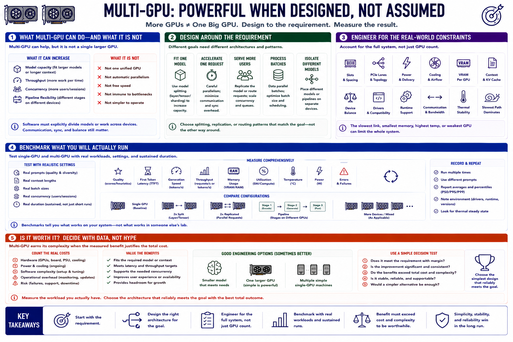

Course Summary and Key Takeaways
Connecting to LMS... Progress: in progress

Narration
Multi-GPU systems can increase model capacity, throughput, concurrency, or pipeline flexibility, but they do not automatically become one larger GPU. Software must divide models or work explicitly.
Design around the requirement: fitting one model, accelerating one request, serving more users, processing batches, or isolating different models. Each goal favors different splitting, replication, or routing patterns.
Account for slots, lanes, topology, spacing, power, cooling, VRAM, context, device balance, drivers, runtime support, communication, and thermal stability. The slowest path can dominate the system.
Benchmark single-GPU and multi-GPU configurations with real prompts, context, batch, concurrency, and sustained duration. Measure quality, first token, generation, throughput, memory, utilization, temperature, power, errors, and recovery.
Multi-GPU is worth it when measured workload benefit exceeds added cost and operational complexity. Sometimes a smaller model, one larger GPU, or several simple single-GPU machines is the better engineering choice.